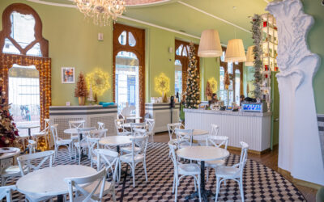
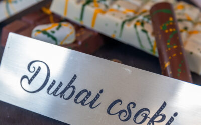

Blog
Kezdd autentikus francia croissantal a napod!
Kezdd egy önfeledt REÖK-mosollyal 2025-öt! Már reggel 8-tól vár Szeged kézműves cukrászdája: - ha bekuckóznál egy forró szálas teára,- ha nevetnél egy jót valakivel,- vagy ha egy autentikus, francia croissantra vágysz ma (vagy holnap)reggel, nálunk a helyed! Szeged,...

Mérlegképes könyvelőt keresünk!
Értesz a számok nyelvén? Mérlegképes könyvelői végzettséged van?Könyveléssel foglalkozol vagy mindig is ezen a területen szerettél volna elhelyezkedni? Van egy klassz hírünk: MÉRLEGKÉPES KÖNYVELŐT KERESÜNK a csapatunkba! KIK VAGYUNK MI? Szeged meghatározó...

Dubai csoki, a kulisszák mögött: így készül Szeged kedvenc desszertje!
Kezdd egy önfeledt REÖK-mosollyal 2025-öt! Már reggel 8-tól vár Szeged kézműves cukrászdája: - ha bekuckóznál egy forró szálas teára,- ha nevetnél egy jót valakivel,- vagy ha egy autentikus, francia croissantra vágysz ma (vagy holnap)reggel, nálunk a helyed! Szeged,...